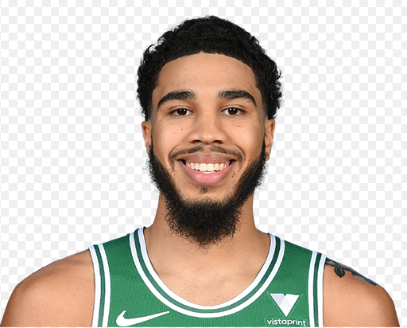

Celtics
The Boston Celtics are an American professional basketball team based in Boston. The Celtics compete in the National Basketball Association (NBA) as a member of the league's Eastern Conference Atlantic Division. Founded in 1946 as one of the league's original eight teams, the Celtics play their home games at TD Garden, which they share with the National Hockey League (NHL)'s Boston Bruins. The Celtics are regarded as one of the most successful basketball teams in NBA history; the franchise is tied with the Los Angeles Lakers for most NBA Championships won with 17 (accounting for 23.6 percent of all NBA championships since the league's founding) and currently holds the record for the most recorded wins of any NBA team.[9][10] The Celtics are one of the two charter BAA franchises (the other is the New York Knicks) still playing in their original city.
The Celtics have a notable rivalry with the Los Angeles Lakers, which was heavily highlighted throughout the 1960s and 1980s. During the two teams' many match-ups in the 1980s, the Celtics' star, Larry Bird, and the Lakers' star, Magic Johnson, had an ongoing feud. The franchise has played the Lakers a record 12 times in the NBA Finals (including their most recent appearances in 2008 and 2010), of which the Celtics have won nine.[11] Four Celtics players (Bob Cousy, Bill Russell, Dave Cowens and Larry Bird) have won the NBA Most Valuable Player Award for an NBA record total of 10 MVP awards.[12] Both the nickname "Celtics" and their mascot "Lucky the Leprechaun" are a nod to Boston's historically large Irish population, and also to the Original Celtics, a marquee team prior to the NBA.
The Celtics' rise to dominance began in the late 1950s, after coach Red Auerbach acquired center Bill Russell, who would become the cornerstone of the Celtics dynasty, in a draft day trade in 1956. Led by Russell and superstar point guard Bob Cousy, the Celtics won their first NBA championship in 1957. Russell, along with a talented supporting cast of future Hall of Famers including John Havlicek, Tom Heinsohn, K. C. Jones, Sam Jones, Satch Sanders, and Bill Sharman, would usher the Celtics into the greatest period in franchise history, winning eight consecutive NBA championships throughout the 1960s. After the retirement of Russell in 1969, the Celtics entered a period of rebuilding. Led by center Dave Cowens and point guard JoJo White, the Celtics returned to championship caliber, winning two NBA titles in 1974 and 1976. The Celtics again returned to dominance in the 1980s. Led by the "Big Three" that featured Larry Bird, Kevin McHale, and Robert Parish, the Celtics won the 1981, 1984, and 1986 championships. After winning 16 championships throughout the 20th century, the Celtics, after struggling through the 1990s, rose again to win a championship in 2008 with the help of Kevin Garnett, Paul Pierce, and Ray Allen in what was known as the new "Big Three" era. The Celtics returned to the NBA Finals in 2010, only to lose to the Lakers in a seven-game series.
By the start of the 2013 season, none of the "Big Three" were still with the team, which ushered in a new era for the team. With the help of newly hired head coach Brad Stevens, the team began rebuilding. In his second season, Stevens led the Celtics on a return to the playoffs in 2015. During the following season, the Celtics clinched the top seed in the Eastern Conference, but were eliminated in the Conference Finals. This prompted an aggressive rebuild in 2017, where the team acquired All-Stars Kyrie Irving and Gordon Hayward.[14] However, the pair struggled with injuries throughout the 2017–18 season, and the team was again defeated in the Eastern Conference Finals, despite pushing the Cleveland Cavaliers to seven games.
 Drafted into the NBA by the Boston Celtics with the sixth overall pick in the 1978 NBA draft, Bird started at small forward and power forward for the Celtics for 13 seasons. Bird was a 12-time NBA All-Star and received the NBA Most Valuable Player Award three consecutive times (1984–1986), making him the only forward in league history to do so. He played his entire professional career for Boston, winning three NBA championships and two NBA Finals MVP awards. Bird was also a member of the gold medal-winning 1992 United States men's Olympic basketball team known as "The Dream Team". He was voted to the NBA's 50th Anniversary All-Time Team in 1996, was inducted into the Naismith Memorial Basketball Hall of Fame in 1998, and was inducted into the Hall of Fame again in 2010 as a member of "The Dream Team".
Bird was rated the greatest NBA small forward of all time by Fox Sports in 2016.[2] He was also ranked as the greatest Boston Celtics player of all time by MSN Sports in 2018.[3] While also known to play the power forward position for part of his career, Bird was rated the greatest Boston Celtics power forward of all time by MSN Sports in 2020.[4] Universally recognized as an all-time great player, Bird was placed on an NBA all-time starting five roster with fellow superstars Magic Johnson (point guard), Michael Jordan (shooting guard), LeBron James (small forward), and Kareem Abdul-Jabbar (center) in 2020.
Drafted into the NBA by the Boston Celtics with the sixth overall pick in the 1978 NBA draft, Bird started at small forward and power forward for the Celtics for 13 seasons. Bird was a 12-time NBA All-Star and received the NBA Most Valuable Player Award three consecutive times (1984–1986), making him the only forward in league history to do so. He played his entire professional career for Boston, winning three NBA championships and two NBA Finals MVP awards. Bird was also a member of the gold medal-winning 1992 United States men's Olympic basketball team known as "The Dream Team". He was voted to the NBA's 50th Anniversary All-Time Team in 1996, was inducted into the Naismith Memorial Basketball Hall of Fame in 1998, and was inducted into the Hall of Fame again in 2010 as a member of "The Dream Team".
Bird was rated the greatest NBA small forward of all time by Fox Sports in 2016.[2] He was also ranked as the greatest Boston Celtics player of all time by MSN Sports in 2018.[3] While also known to play the power forward position for part of his career, Bird was rated the greatest Boston Celtics power forward of all time by MSN Sports in 2020.[4] Universally recognized as an all-time great player, Bird was placed on an NBA all-time starting five roster with fellow superstars Magic Johnson (point guard), Michael Jordan (shooting guard), LeBron James (small forward), and Kareem Abdul-Jabbar (center) in 2020.
Jayson Christopher Tatum (born March 3, 1998) is an American professional basketball player for the Boston Celtics of the National Basketball Association (NBA). A native of St. Louis, Missouri, Tatum attended hometown Chaminade College Preparatory School, where he was rated a five-star recruit and regarded as one of the top players in the Class of 2016 by recruiting services. He played college basketball for the Duke Blue Devils before entering the 2017 NBA draft. He was selected with the third overall pick by the Boston Celtics. He won the 2019 Skills Challenge during NBA All-Star Weekend.